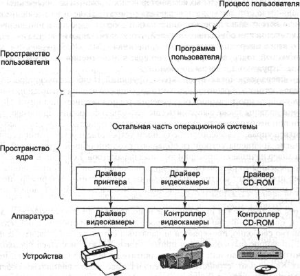
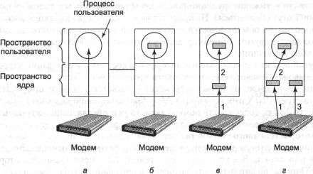
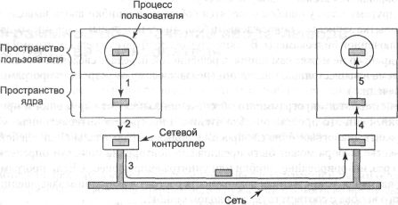

Программное обеспечение ввода-вывода обычно организуется в виде четырех уровней,
показанных на рис. 5.8. У каждого уровня есть четко очерченная функция, которую
он должен выполнять, и строго определенный интерфейс с соседними уровнями. Функции
и интерфейсы уровней меняются от одной операционной системы к другой, поэтому
последующее рассмотрение всех уровней, начиная с нижнего, не является специфичным
для какой-либо конкретной машины.
Обработчики прерываний
Хотя программный ввод-вывод иногда бывает полезен, для большинства операций
ввода-вывода прерывания являются неприятным, но необходимым фактом. Прерывания
должны быть упрятаны как можно глубже во внутренностях операционной системы,
чтобы о них знала как можно меньшая часть операционной системы. Лучший способ
спрятать их заключается в блокировке драйвера, начавшего операцию ввода-вывода,
вплоть до окончания этой операции и получения прерывания. Драйвер может заблокировать
себя сам, выполнив на семафоре процедуру down, процедуру wait на переменной
состояния, процедуру receive на сообщении, или что-либо подобное.
Когда происходит прерывание, начинает работу обработчик прерываний. По окончании
необходимой работы он может разблокировать драйвер, запустивший его. В некоторых
случаях используется выполнение процедуры up на семафоре.
В других случаях обработчик прерываний вызывает процедуру монитора signal
с переменной состояния. В третьем случае он посылает заблокированному драйверу
сообщение. В любом случае драйвер разблокируется обработчиком прерываний. Эта
схема лучше всего работает в драйверах, являющихся процессами ядра со своим
собственным состоянием, стеком и счетчиком команд.
Рис. 5.8. Программные уровни ввода-вывода
Конечно, в действительности все обстоит совсем не так просто. Обработать
прерывание значительно сложнее, чем просто принять его, выполнить up на семафоре,
после чего вернуться из прерывания в предыдущий процесс с помощью команды процессора
IRET. Операционной системе приходится выполнить значительно больше работы. Мы
покажем схематичный набросок этой работы в виде набора шагов, которые следует
выполнить программному обеспечению после того, как произошло аппаратное прерывание.
Необходимо заметить, что детали во многом зависят от конкретной системы, поэтому
на каких-то машинах некоторые перечисленные шаги могут оказаться лишними, зато
может потребоваться выполнение других, не помещенных в список шагов. Кроме того,
на разных машинах может потребоваться выполнение перечисленных действий в разном
порядке.
1. Сохранить все регистры (включая PSW), не сохраненные аппаратурой.
2. Установить контекст для процедуры обработки прерываний. Выполнение этого
действия может включать установку TLB, MMU и таблицы страниц.
3. Установить указатель стека для процедуры обработки прерываний.
4. Выдать подтверждение контроллеру прерываний. Если централизованного контроллера
прерываний нет, разрешить прерывания.
5. Скопировать содержимое регистров с того места, где они были сохранены
(возможно, в каком-либо стеке), в таблицу процессов.
6. Запустить процедуру обработки прерываний. Она извлечет информацию из регистров
контроллера устройства, инициировавшего прерывание.
7. Выбрать процесс, которому передать управление. Если прерывание разблокировало
какой-либо высокоприоритетный процесс, он может быть выбран в качестве следующего.
8. Установить контекст MMU для следующего работающего процесса. Также может
понадобиться определенная установка TLB.
9. Загрузить регистры нового процесса, включая его PSW.
10. Начать выполнение нового процесса.
Как можно заметить, обработка прерываний является далеко не простым делом.
Она состоит из значительного количества команд процессора, особенно на машинах
с виртуальной памятью, на которых необходимо восстанавливать состояние таблиц
памяти или сохраненное состояние MMU (например, биты R и М). На некоторых машинах
буфер быстрого преобразования адреса TLB и кэш центрального процессора также
требуют управления при переключении режимов пользователя и ядра, для чего необходимы
дополнительные машинные циклы.
Драйверы устройств
Ранее в этой главе мы познакомились с функциями контроллеров устройств ввода-вывода.
Как было сказано, у каждого контроллера есть набор регистров, используемых для
того, чтобы давать управляемому им устройству команды и читать состояние устройства.
Число таких регистров и команды, выдаваемые устройствам, зависят от конкретного
устройства. Например, драйвер мыши должен принимать от мыши информацию о том,
насколько далеко она продвинулась по горизонтали и вертикали, а также о нажатых
кнопках мыши. Драйвер диска, в отличие от драйвера мыши, должен знать о секторах,
дорожках, цилиндрах, головках, их перемещении и времени установки, двигателях
и тому подобных вещах, необходимых для правильной работы диска. Очевидно, что
эти драйверы будут сильно различаться.
Поэтому для управления каждым устройством ввода-вывода, подключенным к компьютеру,
требуется специальная программа. Эта программа, называемая драйвером устройства,
обычно пишется производителем устройства и распространяется вместе с устройством.
Поскольку для каждой операционной системы требуются специальные драйверы, производители
устройств обычно поставляют драйверы для нескольких наиболее популярных операционных
систем.
Каждый драйвер устройства обычно поддерживает один тип устройств или, максимум,
класс близких устройств. Например, драйвер SCSI-дисков обычно может поддерживать
различные SCSI-диски, отличающиеся размерами и скоростями, и возможно даже будет
поддерживать SCSI CD-ROM. С другой стороны, мышь и джойстик отличаются настолько
сильно, что обычно требуют использования различных драйверов. Однако нет никакого
технического ограничения на управление одним драйвером нескольких непохожих
устройств. Это просто не слишком удачная идея.
Чтобы получить доступ к аппаратной части устройства, то есть к регистрам
контроллера, драйвер устройства должен быть частью ядра операционной системы,
по крайней мере, в существующих на сегодняшний день архитектурах. В действительности
возможно создать и драйвер, работающий в пространстве пользователя, с системными
вызовами для чтения и записи регистров устройств. В самом деле, это было бы
даже неплохой идеей, так как позволило бы изолировать ядро от драйверов, а драйверы
друг от друга. При этом была бы устранена основная причина крушения операционной
системы — драйверы, содержащие ошибки, сталкивающиеся с ядром тем или иным образом.
Тем не менее, поскольку современные операционные системы предполагают работу
драйверов в ядре, мы рассмотрим здесь именно такую модель.
Так как в операционную систему будут устанавливаться куски программ (драйверы),
написанные другими программистами, необходима определенная архитектура, позволяющая
подобную установку. Это означает, что должна быть выработана строго определенная
модель функций драйвера и его взаимодействия с остальной операционной системой.
Драйверы устройств обычно располагаются под остальной операционной системой,
как показано на рис. 5.9.

Рис. 5.9. Логическое расположение драйверов устройств.
На самом деле весь обмен информацией
между драйверами и контроллерами устройств идет по шине
Операционная система обычно классифицирует драйверы по нескольким категориям
в соответствии с типами обслуживаемых ими устройств. К наиболее общим категориям
относятся блочные устройства, например, диски, содержащие блоки данных, к которым
возможна независимая адресация, и символьные устройства, такие как клавиатуры
и принтеры, формирующие или принимающие поток символов.
В большинстве операционных систем определен стандартный интерфейс, который
должны поддерживать все блочные драйверы, и второй стандартный интерфейс, поддерживаемый
всеми символьными драйверами. Эти интерфейсы включают наборы процедур, которые
могут вызываться остальной операционной системой для обращения к драйверу. К
этим процедурам относятся, например, процедуры чтения блока (блочного устройства)
или записи символьной строки (для символьного устройства).
В некоторых системах операционная система представляет собой единую двоичную
программу, содержащую в себе, в откомпилированном вместе с ней виде, все необходимые
ей драйверы. Такая схема в течение многих лет была нормой для систем UNIX, так
как они предназначались для работы в компьютерных центрах, а устройства ввода-вывода
менялись нечасто. При добавлении нового устройства системный администратор просто
перекомпилировал ядро с новым драйвером, получая новый двоичный модуль.
С появлением персональных компьютеров с их огромным разнообразием устройств
ввода-вывода такая модель перестала работать. Далеко не все пользователи могли
самостоятельно перекомпилировать и собрать ядро даже при наличии исходных текстов
или объектных модулей, что, кстати, также не всегда имеет место. Вместо этого
операционные системы, начиная с MS-DOS, перешли к модели динамической подгрузки
драйверов во время выполнения системы. Различные системы загружают драйверы
по-разному.
У драйвера устройства есть несколько функций. Наиболее очевидная функция
драйвера состоит в обработке абстрактных запросов чтения и записи независимого
от устройств программного обеспечения, расположенного над ними. Но кроме этого
они должны также выполнять еще несколько функций. Например, драйвер должен при
необходимости инициализировать устройство. Ему также может понадобиться управлять
энергопотреблением устройства и регистрацией событий.
Многие драйверы устройств обладают сходной общей структурой. Типичный драйвер
начинает с проверки входных параметров. Если они не удовлетворяют определенным
критериям, драйвер возвращает ошибку. В противном случае драйвер преобразует
абстрактные термины в конкретные. Например, дисковый драйвер может преобразовывать
линейный номер блока в номера головки, дорожки и секторы.
Затем драйвер может проверить, не используется ли это устройство в данный
момент. Если устройство занято, запрос может быть поставлен в очередь. Если
устройство свободно, проверяется аппаратный статус устройства, чтобы понять,
может ли запрос быть обслужен прямо сейчас. Может оказаться необходимым включить
устройство или запустить двигатель, прежде чем начнется перенос данных. Как
только устройство включено и готово, может начинаться собственно управление
устройством.
Управление устройством подразумевает выдачу ему серии команд. Именно в драйвере
определяется последовательность команд в зависимости от того, что должно быть
сделано. Определившись с командами, драйвер начинает записывать их в регистры
контроллера устройства. После записи каждой команды в контроллер может быть
нужно проверить, принял ли контроллер эту команду и готов ли принять следующую.
Такая последовательность действий продолжается до тех пор, пока контроллеру
не будут даны все команды. Некоторые контроллеры способны принимать связные
списки команд, находящихся в памяти. Они сами считывают и выполняют их без дальнейшей
помощи операционной системы.
После того как драйвер передал все команды контроллеру, ситуация может развиваться
по двум сценариям. Во многих случаях драйвер устройства должен ждать, пока контроллер
не выполнит для него определенную работу, поэтому он блокируется до тех пор,
пока прерывание от устройства его не разблокирует. В других случаях операция
завершается без задержек и драйверу не нужно блокироваться. Например, для скроллинга
экрана в символьном режиме нужно записать всего лишь несколько байтов в регистры
контроллера. Вся операция занимает несколько наносекунд.
В первом случае заблокированный драйвер будет активизирован прерыванием.
Во втором случае драйвер не блокируется. В любом случае по завершении выполнения
операции драйвер должен проверить, завершилась ли операция без ошибок. Если
все в порядке, драйверу, возможно, придется предать данные (например, только
что прочитанный блок) независимому от устройств программному обеспечению. Наконец,
драйвер возвращает некоторую информацию о состоянии для информирования вызывающей
программы о статусе завершения операции. Если в очереди находились другие запросы,
один из них теперь может быть выбран и запущен. В противном случае драйвер блокируется
в ожидании следующего запроса.
Эта упрощенная модель является лишь грубым приближением к реальности. На
самом деле программа значительно сложнее, причиной чему служит большое количество
разнообразных факторов. Во-первых, устройство ввода-вывода может завершить выполнение
операции во время работы драйвера, таким образом прерывая его работу. Во-вторых,
во время обработки сетевым драйвером пришедшего пакета может прийти еще один
пакет. Соответственно, драйвер должен быть реентерабельным, то есть должен быть
готов к тому, что во время обработки первого вызова может последовать другой
вызов.
В системе с возможностью горячей установки устройства могут добавляться или
удаляться во время работы системы. В результате в то время, когда драйвер занят
чтением с какого-либо устройства, система может проинформировать его, что пользователь
внезапно удалил это устройство из системы. При этом не только текущая операция
переноса данных должна быть прервана без повреждения структур данных ядра, но
также и все ожидающие обработки запросы к теперь исчезнувшему устройству должны
быть корректно удалены из системы, а обратившимся к ним программам должна быть
сообщена неприятная новость. Более того, неожиданное добавление нового устройства
может заставить ядро жонглировать ресурсами (например, линиями запросов прерывания),
отнимая их у одного драйвера и предоставляя другому драйверу.
Драйверам не разрешается обращаться к системным вызовам, но им часто бывает
необходимо взаимодействовать с остальным ядром. Обычно разрешаются обращения
к некоторым системным процедурам. Например, драйверы обращаются к системным
процедурам для выделения им аппаратно фиксированных страниц памяти в качестве
буферов, а также затем, чтобы вернуть эти страницы обратно ядру. Кроме того,
драйверы пользуются вызовами, управляющими MMU, таймерами, контроллером DMA,
контроллером прерываний и т. п.
Независимое от устройств программное обеспечение ввода-вывода
Хотя некоторая часть программного обеспечения ввода-вывода предназначена для
работы с конкретными устройствами, другая часть является независимой от устройств.
Расположение точной границы между драйверами и независимым от устройств программным
обеспечением зависит от системы (и устройств), так как некоторые функции, которые
могут быть выполнены независимым от устройств
образом, часто выполняются прямо в драйверах из различных соображений, в
том числе соображений эффективности. Функции, показанные в табл. 5.2, обычно
реализуются в независимом от устройств программном обеспечении.
Таблица 5.2. Функции независимого от устройств программного
обеспечения
Единообразный интерфейс
для драйверов устройств
Буферизация
Сообщение об ошибках
Захват и освобождение выделенных устройств
Размер блока, не зависящий от устройства
Основная задача независимого от устройств программного обеспечения состоит
в выполнении функций ввода-вывода, общих для всех устройств, и предоставлении
единообразного интерфейса для программ уровня пользователя. Ниже мы рассмотрим
некоторые из этих вопросов более подробно.
Единообразный интерфейс для драйверов устройств
Главный вопрос операционной системы — как сделать так, чтобы все устройства
ввода-вывода и драйверы выглядели более-менее одинаково. Если диски, принтеры,
клавиатуры и т. д. требуют различных интерфейсов, при появлении каждого нового
устройства будет требоваться переделка операционной системы, что определенно
не является удачной мыслью.
Этот вопрос связан с интерфейсом между драйверами устройств и остальной операционной
системой. На рис. 5.10, а показана ситуация, в которой у всех драйверов
различный интерфейс с операционной системой. Это означает, что функции драйвера,
доступные системе, отличаются от драйвера к драйверу. Это может также означать,
что функции ядра, необходимые для драйвера, тоже различаются. Все вместе это
означает, что взаимодействие с каждым новым драйвером требует больших усилий
программистов.
Напротив, на рис. 5.10, б изображен принципиально другой подход, при
котором у всех драйверов один и тот же интерфейс. При этом значительно легче
установить новый драйвер, при условии, что он соответствует стандартному интерфейсу.
Это также означает, что программисты, пишущие драйверы, знают, чего от них ожидают
(то есть какие функции они должны реализовать и к каким функциям ядра они могут
обращаться). На практике не все устройства являются абсолютно идентичными, но
обычно имеется небольшое число типов устройств, достаточно сходных друг с другом.
Например, даже у блочных и символьных устройств есть много общих функций.
Другой аспект единообразного интерфейса состоит в именовании устройств ввода-вывода.
Независимое от устройств программное обеспечение занимается отображением символьных
имен устройств на соответствующие драйверы. Например, в системе UNIX имя устройства
/dev/disk0 однозначно указывает i-узел специального файла, содержащий
номер главного устройства, использующийся для определения расположения подходящего
драйвера. Этот i-узел также содержит номер второстепенного устройства, передаваемый
в виде параметра драйверу для указания конкретного диска или раздела диска,
к которому относится операция чтения или записи. Все устройства в системе UNIX
имеют главный и второстепенный номера, по которым они однозначно идентифицируются.
Выбор всех драйверов осуществляется по главному номеру устройства.
С именованием устройств тесно связан вопрос защиты. Как операционная система
предотвращает доступ пользователей к устройствам, на который у них нет прав?
В UNIX и в Windows 2000 устройства представляются в файловой системе в виде
именованных объектов, что дает возможность применять обычные правила защиты
файлов к устройствам ввода-вывода. Таким образом, системный администратор может
установить нужные разрешения для каждого устройства.
Буферизация
Буферизация также является важным вопросом как для блочных, так и для символьных
устройств по самым разным причинам. Чтобы проиллюстрировать одну из причин,
рассмотрим процесс, который хочет прочитать данные с модема. Одна из возможных
стратегий обработки поступающих символов состоит в обращении процесса пользователя
к системному вызову read и блокировке в ожидании отдельного символа. Каждый
прибывающий символ вызывает прерывание. Процедура обработки прерываний передает
символ пользовательскому процессу и разблокирует его. Поместив куда-либо полученный
символ, процесс читает следующий символ, опять блокируясь. Эта схема проиллюстрирована
на рис. 5.11, а.
Недостаток такого подхода состоит в том, что процесс пользователя должен
быть активирован при прибытии каждого символа, что крайне неэффективно.
Улучшенный вариант показан на рис. 5.11, б. Здесь пользовательский
процесс предоставляет буфер размером в n символов в пространстве пользователя,
после чего выполняет чтение n символов. Процедура обработки прерываний
помещает приходящие символы в буфер до тех пор, пока он не заполнится. Затем
она активизирует процесс пользователя. Такая схема гораздо эффективнее предыдущей,
однако у нее также есть недостатки: что случится, если в момент прибытия символа
страница памяти, в которой расположен буфер, окажется выгруженной из физической
памяти? Конечно, буфер можно зафиксировать в памяти; если слишком много процессов
начнут фиксировать свои страницы в памяти, пул доступных страниц памяти уменьшится,
в результате чего снизится производительность.

Рис. 5.11. Небуферизированный ввод (а); буферизация
в пространстве пользователя (б);
буферизация в ядре с копированием в пространство пользователя (в);
двойная буферизация в ядре (г)
Следующий подход состоит в создании буфера, в который обработчик прерываний
будет помещать поступающие символы, в ядре, как показано на рис. 5.11, в.
Когда этот буфер наполняется, достается страница с буфером пользователя, и содержимое
буфера копируется туда за одну операцию. Такая схема намного эффективнее.
Однако даже при использовании этой схемы имеются определенные проблемы. Что
случится с символами, прибывающими в тот момент, когда страница пользователя
загружается с диска? Поскольку буфер полон, их некуда поместить. Решение проблемы
состоит в использовании второго буфера в ядре, в который помещаются символы
после заполнения первого буфера до его освобождения (рис. 5.11, г). При
этом буферы как бы меняются местами, то есть первый буфер начинает играть роль
запасного. Такая схема часто называется двойной буферизацией.
Буферизация также играет важную роль при выводе данных. Рассмотрим, например,
как происходит вывод на модем при помощи модели, показанной на рис. 5.11, б.
Пользовательский процесс выполняет системный вызов write для вывода n
символов. У системы в этот момент есть выбор. Она может заблокировать пользователя,
пока все символы не будут записаны, но по медленной телефонной линии это может
занять довольно много времени. Она может разрешить пользователю продолжать выполнение
немедленно и выполнять операцию ввода-вывода, в то время как пользователь занимается
другими вычислениями. Однако при этом возникает непростая проблема: как пользовательский
процесс узнает, что операция вывода завершена и он может опять пользоваться
этим буфером? Система может подать сигнал или программное прерывание, но такой
стиль программирования сложен и чреват возникновениями ситуаций состязания.
Значительно лучшее решение состоит в копировании данных в буфер ядра, по аналогии
с рис. 5.11, в (но в обратном направлении), и немедленном разблокировании
вызывающего процесса. Теперь уже не важно, когда будет выполнена физическая
операция ввода-вывода. Пользователь может использовать буфер сразу после возврата
ему управления.
Буферизация является широко применяемой технологией, однако у нее имеются
свои недостатки. Если при буферизации данные копируются слишком много раз, страдает
производительность. Рассмотрим, например, сеть (рис. 5.12). Пользователь обращается
к системному вызову для записи данных по сети. Ядро копирует пакет в буфер ядра,
чтобы пользователь мог немедленно продолжить работу (шаг 1).

Рис. 5.12. Копии пакета при передаче его по сети
При вызове драйвера пакет копируется в контроллер для вывода (шаг 2). Память
ядра не используется напрямую, так как передача по линии должна производиться
с постоянной скоростью. Драйвер не может гарантировать, что он сможет получать
доступ к памяти с постоянной скоростью, так как каналы DMA и другие устройства
ввода-вывода могут внезапно захватить много циклов шины. Если драйвер не сможет
предоставить контроллеру вовремя хотя бы одно слово данных, весь пакет будет
разрушен. Этой проблемы удается избежать при помощи буферизации пакета целиком
внутри контроллера.
Затем пакет копируется в сеть (шаг 3). Получающая сторона собирает
пакет из отдельных битов также в буфере сетевого контроллера. После этого пакет
копируется в буфер ядра получателя (шаг 4). Наконец, он копируется в
буфер получающего процесса (шаг 5). Обычно в ответ получатель отправляет
подтверждение. Получив подтверждение, отправитель может посылать следующий пакет.
Однако должно быть очевидно, что все эти операции копирования существенно замедляют
передачу данных, поскольку все эти шаги должны выполняться последовательно.
Сообщения об ошибках
Ошибки значительно чаще случаются в контексте ввода-вывода, нежели в других
контекстах. При возникновении ошибок операционная система должна обработать
их как можно быстрее. Многие ошибки являются специфичными для конкретного устройства
и должны обрабатываться соответствующим драйвером, но структура обработки ошибок
является независимой от устройств.
Один из классов ошибок ввода-вывода составляют ошибки программирования. Они
происходят, когда процесс просит чего-либо невозможного — например, записать
данные на устройство ввода (клавиатуру, мышь, сканер и т. д.) или, наоборот,
прочитать данные с устройства вывода (принтера, плоттера и т. п.). Другие ошибки
включают предоставление неверного адреса буфера или иных параметров, а также
обращение к несуществующему устройству (например, к диску 3, когда у системы
всего два диска). Обработка таких ошибок довольно проста: код ошибки возвращается
вызывающему процессу.
К другому классу ошибок относятся собственно ошибки ввода-вывода, такие как
попытка записать в поврежденный блок диска или попытка прочитать данные с выключенной
видеокамеры. В таких случаях драйвер сам решает, что ему делать. Если драйвер
не может сам принять решение, он передает сведения о возникшей проблеме в вышестоящие
инстанции (независимому от устройств программному обеспечению).
Действия этого программного обеспечения зависят от окружения и природы ошибки.
Если это простая ошибка чтения, а программа интерактивная, можно отобразить
диалоговое окно с вопросом к пользователю о дальнейших действиях. В качестве
выбора может быть предложено повторение попытки определенное число раз, игнорирование
ошибки или уничтожение процесса. Если программа не интерактивная, единственная
возможность состоит в аварийном завершении системного вызова с соответствующим
кодом ошибки.
Однако не все ошибки могут быть обработаны подобным образом. Например, может
оказаться поврежденной критическая структура данных, такая как корневой каталог
или список свободных блоков. В этом случае, возможно, системе придется вывести
сообщение об ошибке и завершить свою работу.
Захват и освобождение выделенных устройств
Некоторые устройства, например устройство записи компакт-дисков, могут использоваться
в каждый момент времени только одним пользователем. Операционная система должна
рассмотреть запросы на использование этого устройства и либо принять их, либо
отказать в выполнении запроса, в зависимости от доступности запрашиваемого устройства.
Простой способ обработки этих запросов состоит в требовании к процессам обращаться
напрямую к системному вызову open по отношению к специальным файлам для данных
устройств. Если устройство недоступно, системный вызов open завершится неуспешно.
Обращение к системному вызову close освобождает устройство.
Альтернативный подход состоит в предоставлении специального механизма для
запроса и освобождения выделенных устройств. Попытка захватить недоступное устройство
вызовет блокировку вызывающего процесса вместо возврата с ошибкой. Блокированные
процессы устанавливаются в очередь. Раньше или позже запрашиваемое устройство
освобождается и первому процессу в очереди разрешается захватить его и продолжить
выполнение.
Независимый от устройств размер блока
У различных дисков могут быть разные размеры сектора. Независимое от устройств
программное обеспечение должно скрывать этот факт от верхних уровней и предоставлять
им единообразный размер блока, например, объединяя несколько физических сегментов
в один логический блок. При этом более высокие уровни имеют дело только с абстрактными
устройствами, с одним и тем же размером логического блока, не зависящим от размера
физического сектора. Некоторые символьные устройства предоставляют свои данные
побайтно (например, модемы), тогда как другие выдают их большими порциями (например,
сетевые интерфейсы). Эти различия также могут быть скрыты.
Программное обеспечение ввода-вывода пространства пользователя
Хотя большая часть программного обеспечения ввода-вывода находится в операционной
системе, небольшие его порции состоят из библиотек, присоединенных к программам
пользователя, или даже целых программ, работающих вне ядра. Системные вызовы,
включая системные вызовы ввода-вывода, обычно состоят из библиотечных процедур.
Если программа на С содержит вызов
count = write(fd, buffer, nbytes);
библиотечная процедура write будет скомпонована с программой и, таким
образом, будет содержаться в двоичной программе, загружаемой в память во время
выполнения программы. Набор всех этих библиотечных процедур, несомненно, является
частью системы ввода-вывода.
Хотя многие такие процедуры мало что делают, кроме обращения к системному
вызову с соответствующими параметрами, есть ряд процедур ввода-вывода, выполняющих
определенную работу. В частности, библиотечными процедурами выполняются операции
форматного ввода и вывода. Например, процедура printf языка С, принимающая
на входе текстовую строку и, возможно, несколько переменных, создает из нее
ASCII-строку, после чего обращается к системному вызову write для вывода
строки. Для примера рассмотрим следующий оператор
printf("Квадрат числа %3d равен %6d\n",
i, i*i);
Он форматирует строку, состоящую из 14-символьной строки "Квадрат числа",
за которой следует значение переменной i в виде 3-символьной строки,
затем 7-сим-вольной строки "равен", потом i2 в виде
6 символов и, наконец, символа перевода строки.
Примером сходной процедуры ввода может служить scanf, читающая текстовую
строку и преобразующая ее в значения переменных в соответствии с форматом, сходным
с используемым процедурой printf. Стандартная библиотека ввода-вывода
содержит большое количество процедур, включающих операции ввода-вывода и работающих
как часть программы пользователя.
Не все программное обеспечение ввода-вывода пространства пользователя состоит
из библиотечных процедур. Другую важную категорию составляет система спулинга.
Спулинг (spooling — подкачка, предварительное накопление данных) представляет
собой способ работы с выделенными устройствами в многозадачной системе. Рассмотрим
типичное устройство, на котором используется спулинг: принтер. В принципе можно
разрешить каждому пользователю открывать специальный символьный файл принтера,
однако представьте себе, что процесс открыл его, а затем не обращался к принтеру
в течение нескольких часов. Ни один другой процесс в это время не сможет ничего
напечатать.
Вместо этого создается специальный процесс, называемый демоном, и специальный
каталог, называемый каталогом спулинга или каталогом спулера. Чтобы распечатать
файл, процесс сначала создает специальный файл, предназначенный для печати,
который помещает в каталог спулинга. Этот файл печатает демон, единственный
процесс, которому разрешается пользоваться специальным файлом принтера. Таким
образом, потенциальная проблема, связанная с тем, что какой-либо процесс на
слишком долгий срок захватит принтер, решается при помощи защиты специального
файла принтера от прямого доступа пользователей.
Спулинг используется не только для принтеров. Например, передачу файлов по
сети также часто осуществляет специальный сетевой демон. Чтобы послать куда-либо
файл, пользователь помещает его в каталог сетевого демона. Затем сетевой демон
извлекает оттуда файл и посылает по сети. Подобный способ передачи файлов по
сети используется системой сетевых новостей USENET News. Эта сеть состоит из
миллионов машин по всему миру, общающихся друг с другом по Интернету. Существуют
тысячи конференций по самым разным темам. Чтобы послать новое сообщение, пользователь
вызывает программу новостей, которая принимает сообщение, а затем помещает его
в каталог спулинга для последующей передачи на другие машины. Вся система новостей
работает вне операционной системы.
На рис. 5.13 показана структура системы ввода-вывода, со всеми уровнями и
основными функциями каждого уровня. Снизу вверх эти уровни представляют собой
аппаратуру, обработчики прерываний, независимое от устройств программное обеспечение
и, наконец, процессы пользователя.
Рис. 5.13. Уровни и основные функции системы ввода-вывода
Стрелки на рис. 5.13 изображают поток управления. Например, когда программа
пользователя пытается прочитать блок из файла, для обработки вызова запускается
операционная система. Независимое от устройств программное обеспечение ищет
этот блок в кэше. Если требуемого блока там нет, оно вызывает драйвер устройства,
чтобы обратиться к аппаратуре и получить этот блок с диска. При этом процесс
блокируется до тех пор, пока не завершится дисковая операция.
Когда диск завершает операцию, аппаратура инициирует прерывание. Обработчик
прерываний запускается, чтобы определить, что случилось, то есть какое устройство
требует внимания. Затем он извлекает статус устройства и активизирует «спящий»
процесс, чтобы завершить запрос ввода-вывода и предоставить пользовательскому
процессу возможность продолжать.